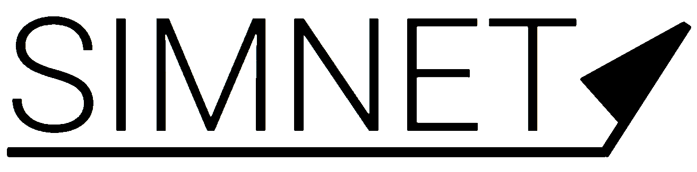

<mat-toolbar>
  
  <button mat-button [matMenuTriggerFor]="simMenu">
    <ng-container i18n="@@flightsimToolSim">Simulation</ng-container>
  </button>
  <mat-menu #simMenu="matMenu">
    <mat-button-toggle-group vertical [(ngModel)]="simulationState" (change)="onSimState($event)">
      <mat-button-toggle value="RESET">
        <mat-icon>fast_rewind</mat-icon>
        <ng-container i18n="@@flightsimToolSimReset"> Reset</ng-container>
      </mat-button-toggle>
      <mat-button-toggle value="PAUSE">
        <mat-icon>pause</mat-icon>
        <ng-container i18n="@@flightsimToolSimPause"> Pause</ng-container>
      </mat-button-toggle>
      <mat-button-toggle value="SIMULATE">
        <mat-icon>play_arrow</mat-icon>
        <ng-container i18n="@@flightsimToolSimSimulate"> Simulate</ng-container>
      </mat-button-toggle>
    </mat-button-toggle-group>
  </mat-menu>
  <button mat-button (click)="openAircraftDlg()">
    <ng-container i18n="@@flightsimToolAircraft">Aircraft</ng-container>
  </button>
  <button mat-button (click)="openLocationDlg()">
    <ng-container i18n="@@flightsimToolLocation">Location</ng-container>
  </button>
  <button mat-button (click)="openSelControllerDlg()">
    <ng-container i18n="@@flightsimToolController">Controller</ng-container>
  </button>
  <button mat-button [matMenuTriggerFor]="viewMenu">
    <ng-container i18n="@@flightsimToolCamera">View</ng-container>
  </button>
  <mat-menu #viewMenu="matMenu">
    <mat-button-toggle-group vertical [(ngModel)]="viewMode" (change)="onViewMode($event)">
      <mat-button-toggle value="GROUND">
        <mat-icon>accessibility</mat-icon>
        <ng-container i18n="@@flightsimToolCameraGr"> Pilot</ng-container>
      </mat-button-toggle>
      <mat-button-toggle value="FOLLOW">
        <mat-icon>airplanemode_active</mat-icon>
        <ng-container i18n="@@flightsimToolCameraFo"> Aircraft</ng-container>
      </mat-button-toggle>
      <mat-button-toggle value="FPV">
        <mat-icon>videocam</mat-icon>
        <ng-container i18n="@@flightsimToolCameraFi"> First Person </ng-container>
      </mat-button-toggle>
      <mat-button-toggle value="FREE">
        <mat-icon>control_camera</mat-icon>
        <ng-container i18n="@@flightsimToolCameraFr"> Free Camera</ng-container>
      </mat-button-toggle>
    </mat-button-toggle-group>
  </mat-menu>

  <button mat-button [matMenuTriggerFor]="widgetsMenu">
    <ng-container i18n="@@flightsimWidgets">Widgets</ng-container>
  </button>
  <mat-menu #widgetsMenu="matMenu">
    <button mat-button (click)="openWindCondDlg()">
      <ng-container i18n="@@flightsimTWingCond">Wind conditions</ng-container>
    </button>
    <br>
    <button mat-button (click)="openAircraftStateDlg()">
      <ng-container i18n="@@flightsimTWingCond">Aircraft State</ng-container>
    </button>
  </mat-menu>

  <span class="fill-space"></span>
  <button mat-stroked-button i18n="@@logoutBtn" (click)="logout()">Logout</button>
</mat-toolbar>
<div id="main-map">
</div>